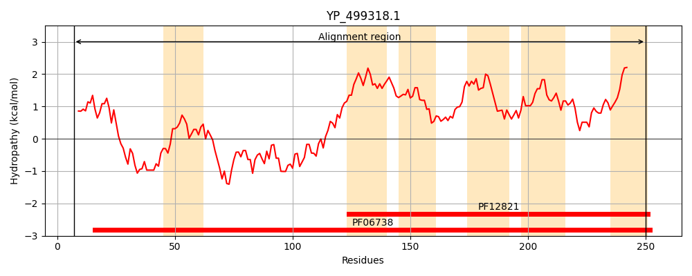
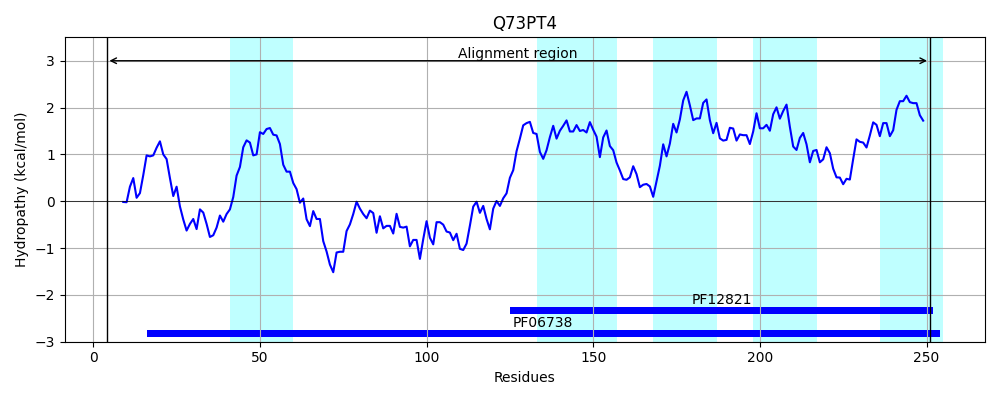
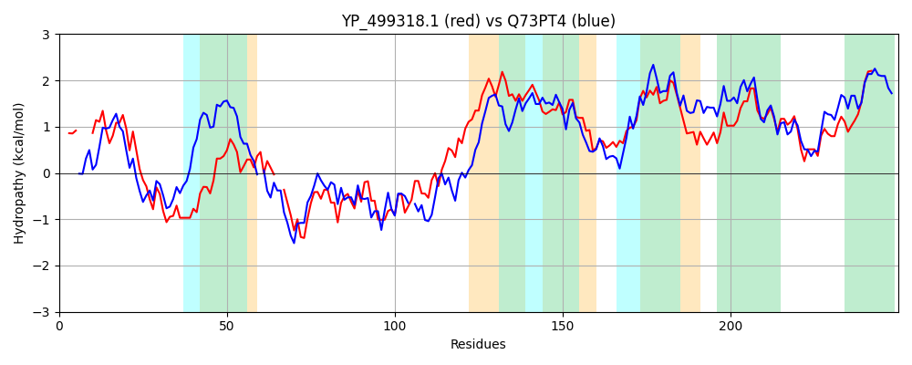

Hit Accession: Q73PT4
Hit TCID: 2.A.79.1.5
Hit Description: gnl|BL_ORD_ID|15260 gnl|TC-DB|Q73PT4|2.A.79.1.5 Membrane protein, putative OS=Treponema denticola (strain ATCC 35405 / CIP 103919 / DSM 14222) GN=TDE_0712 PE=4 SV=1
Mach Len: 250
e:0.000000
Query TMS Count : 6
Hit TMS Count: 5
TMS-Overlap Score: 4.250000
Predicted Substrates:CHEBI:5460;glycine, CHEBI:2539;alanine
BLAST Alignment:
Score: 320 , Bit scores: 127 bits, E-value: 6.9e-36, Alignment length: 250, Percentage identity: 31
Query: 7 IIDENK----VIDVVLIAGRILLESGAETYRVEDTMNRIAHSYGLHNTYSFVSSTAIIFSLNDRT--STRLIRVQERTTDLEKIALTNSLSRKISNKELTIDEAKSEFIHLQHASLQYSFLTNFFAAAIACGFFLFMFGGVASDCWIAVIAGGSAFLTFSFVQRYIQIKFFSEFVAAAVVISIAATFTKLGIATNQDIITIASVMPLVPGILITNAIRDLLAGELLAGMSRGVEAALTAFAIGAGVAIVL 250
I++E K + + L AG +L+++GAE +R E+T+ RI S+G+ F++ T I+ ND+ ST + ++ R +++ KI+L N SR + +++ +EA E + A Y + + I CG F + GG +D + IA +A + ++ + F F+A V I F +G N D+I + +V+ LVPG+ T+ IRD + G+L++G++R EA L A AI G+ VL
Sbjct: 4 IMEEEKNSALIFRIALAAGELLIKNGAEMHRTEETILRICSSHGITGLAVFITPTVILIG-NDKKEGSTYIKNIKVRGSNIHKISLVNEFSRNFTQGKISENEAL-EILKNIDAEKNYPYWLVLTTSGIGCGLFSVLLGGTLNDFIVTFIATFAAVFLNDRITQFSKTVFLGNFIAGFFVGIITILFYHIGFVKNLDMIIVGAVLSLVPGVAFTSGIRDFILGDLVSGIARTSEAVLIAVAIAFGIGSVL 251 | Protein Hydropathy Plots: |
|---|
|  |  |
Pairwise Alignment-Hydropathy Plot:
|
|---|
|  |